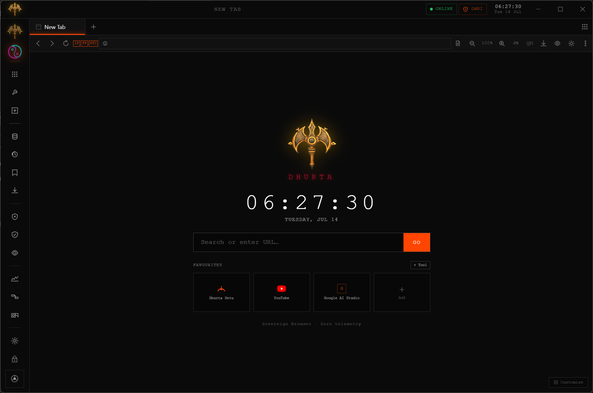
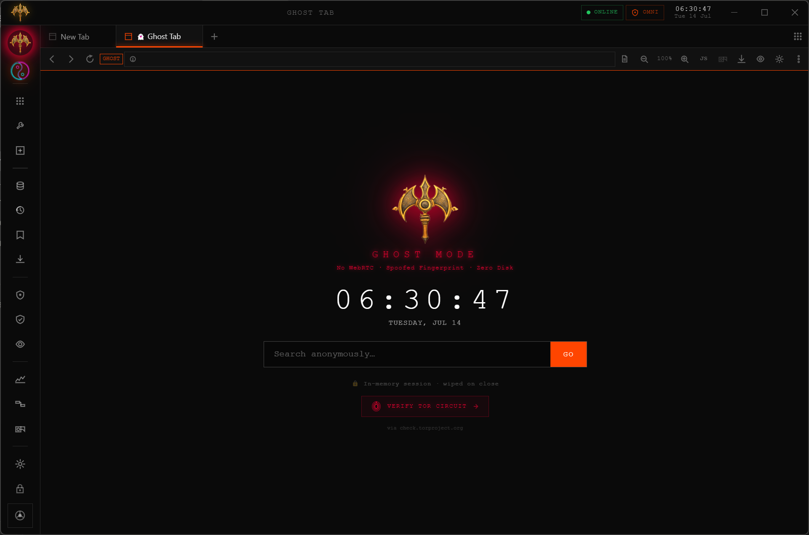
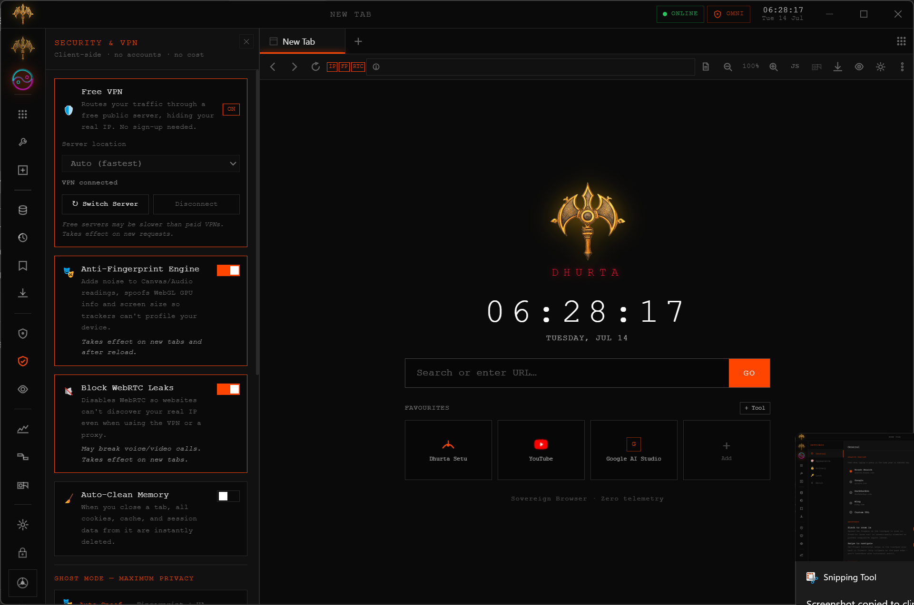
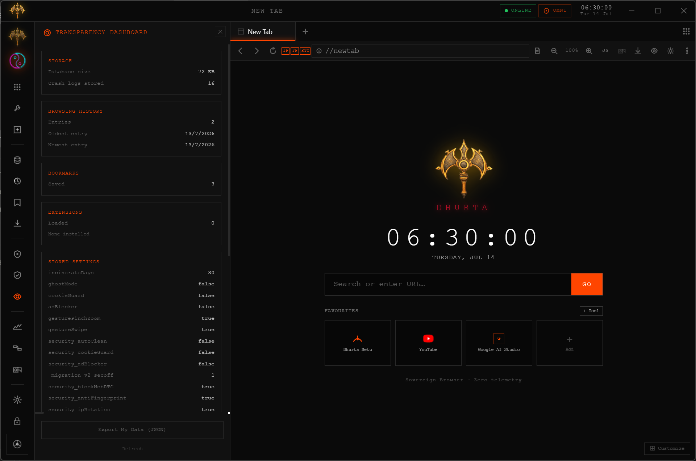

Set up Dhurta like you mean it.
Six steps from install to a fully locked-down setup, illustrated with real screenshots of v1.0.8 where noted.
First launch
Dhurta opens straight to a New Tab with your Speed Dial — no setup wizard, no account prompt.
- Install and open Dhurta from the Start Menu or desktop shortcut.
- The sidebar on the left is your control surface — every icon opens a panel over the current page.
- Pin the tabs you use most from the Speed Dial tiles.

Real screenshot.
Turn on Ghost Mode
Ghost Mode opens a session that lives entirely in memory — nothing written to disk, cleared the moment the tab closes.
- Right-click the + new-tab button, or use the tab context menu.
- Choose Ghost Tab.
- Browse as normal — the tab is tagged so you always know it's ephemeral.
check.torproject.org from inside the Ghost tab.
Real screenshot.
Route through the built-in VPN
Dhurta ships a free built-in VPN with a server picker, plus Anti-Fingerprint and WebRTC blocking as separate toggles — or bundle all of it into one switch as Chakra Shield.
- Open the Security & VPN panel from the sidebar.
- Toggle Free VPN on and pick a server location.
- Toggle Anti-Fingerprint and Block WebRTC Leaks alongside it.

Real screenshot.
Enable Anti-Fingerprint & WebRTC Block
Both are toggles in the same Security panel, and both are off by default — turn them on deliberately, based on your own risk tolerance.
- In the Security panel, switch on Anti-Fingerprint.
- Switch on Block WebRTC.
- Some canvas-heavy sites may behave differently with fingerprint noise on — see Troubleshooting if something breaks.
Illustrative render — not a live capture.
Pair two browsers with Connect
Connect moves sessions and data directly between two Dhurta installs — no server holds the payload in between.
- Open Connect from the sidebar on the first machine — it shows a 6-digit code.
- On the second machine, open Connect and enter that code.
- Once paired, choose what to send across.
Illustrative render — not a live capture.
Check the Transparency Dashboard
The eye icon in the sidebar opens a real-time readout of everything Dhurta has stored about you, locally.
- Click the Transparency (eye) icon in the sidebar.
- See real numbers: database size, browsing history count, bookmarks, loaded extensions, and every stored setting as raw key/value pairs.
- Click Export My Data (JSON) to take the whole thing with you.
false after a data wipe.
Real screenshot.